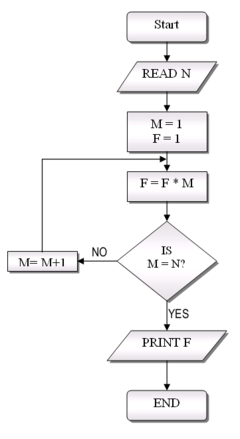

|
Your task is to optimize the input source code for size. The source code will run on an 8-bit architecture. There are 256 variables (numbered from 0 to 255), at most 2 inputs (numbered 0 and 1) and 8 outputs (numbered from 0 to 7). All values are 8-bit unsigned integers: values stored in variables, read from input, written to output and existing as constants in the source code. All arithmetics are evaluated modulo 256. Inputs don't change until the program executes the END instruction. Before running a program, variables and outputs are set to 0. Input of this task is a source file; output is an optimized version of the source. A submission is not accepted, if:
|

source: http://en.wikipedia.org/wiki/File:FlowchartExample.png) |
| description | syntax in input/output files |
|---|---|
| expressions | |
| R = const | n,const,R |
| R = A + B | +,A,B,R |
| R = A - B | -,A,B,R |
| R = A > B | >,A,B,R |
| R = A < B | <,A,B,R |
| R = A == B | =,A,B,R |
| R = A != B | !,A,B,R |
| R = input(A) | i,A,R |
| conditional jump:
IF R != 0 GOTO label | c,R,label |
| unconditional jump:
GOTO label | g,label |
| generating output:
output(A) = R | o,A,R |
| jump label (destination of jumps) | l,label |
| end of execution | e |
| comment (whole line ignored): | #,text |
| Original | Optimized |
|---|---|
l,1 n,0,2 i,2,4 n,1,1 i,1,3 n,3,2 +,4,2,4 n,4,1 +,3,1,3 n,2,2 +,3,2,6 n,0,1 o,1,6 n,6,2 +,4,2,5 n,1,1 o,1,5 e |
n,0,2 n,1,4 n,6,5 n,9,6 i,2,1 i,4,3 +,3,5,0 o,2,0 +,1,6,0 o,4,0 e |